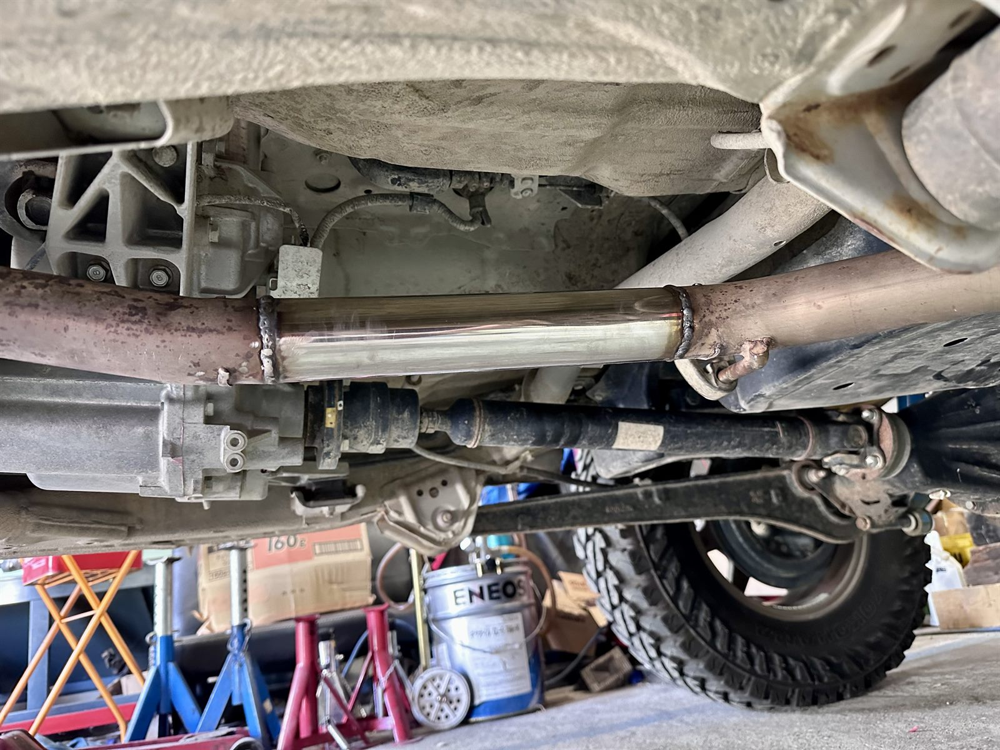

WORK 04
JB64マフラー加工
/ 作業事例
製作記録 // JB64

「もう少しマフラーの音量を大きくしたい」というご要望から始まったJB64のマフラー加工です。 もともと社外フロントパイプと工藤自動車製マフラーの組み合わせでいいサウンドを奏でていましたが、さらに迫力のあるサウンドを求めてのご依頼でした。
ファーストタイコ（一つ目の消音チャンバー）をカットし、その部分をステンレスパイプでストレート構造に加工。 音量アップはもちろん、抜けの良いレーシーなサウンドに生まれ変わりました。仕上がりのサウンドは以下の動画でも確認いただけます。
サウンドチェック
- 社外フロントパイプ・マフラーの状態確認
- ファーストタイコ（消音チャンバー）の切り離し
- ステンレスパイプでストレート構造に加工・溶接
- 本組みのうえサウンドを確認
※ このページはサンプル原稿です。実際の作業内容に合わせて書き換えてください。